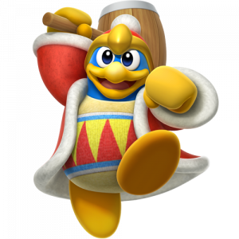
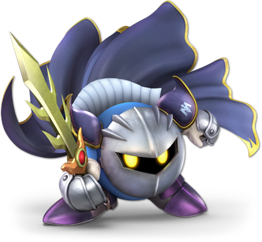

角色介紹
卡比

- 星之卡比系列的主角，性別不明。粉色球形角色，身高約二十厘左右，體重未知，手腳都很短，視力意外的好
- 經常要打倒敵人以解救所居住的波普之星和噗噗噗之國
- 性格天真、快活，喜歡吃東西，特別是M番茄；喜歡午睡，也喜歡唱歌，但唱得非常糟糕，還可當成是一種攻擊
- 過關後會跳自己原創的「卡比之舞」
- 最特別的就是變身系統，只要把一個含有特殊能力的敵人吸到嘴巴里再吞下去，便可拷貝該敵人的特殊能力
- 別稱【粉紅色惡魔】
帝帝帝大王

- 體型約是卡比的兩倍（但在不同作品中都有不同的體現）
- 自稱是噗噗噗之國的國王，卡比的宿敵
- 蠻橫霸道且貪吃，卻在關鍵時刻非常有遠見
- 和卡比保持亦敵亦友的關係
瓦豆魯迪
- 瓦豆魯迪是波普之星上的一族，噗噗噗之國最常見的居民，即是敵人又是友好的NPC
- 瓦豆魯迪中的菁英會戴上藍色頭巾並手持長槍
- 忠誠服務於自稱是噗噗噗之國統治者的帝帝帝大王
- 非常溫順、無憂無慮，即使作為敵人，也僅在短距離範圍內走來走去，不主動攻擊
- 瓦豆魯迪們可以持有不同的道具（如陽傘，滑雪板等），為卡比提供複製能力的道具
魅塔騎士

- 身分不明的戰士，常和卡比用劍決鬥，是卡比亦敵亦友的同伴
- 戴著面具，披著披風和翅膀，擁有「寶劍伽拉西亞」和「戰艦哈爾巴德(必墜)」
- 和卡比的樣子非常相似，似乎是同種生物，可以通過破了面具後的魅塔騎士看到
- 追求宇宙最強
- 貌似是帝帝帝大王的麾下，但看起來又不像